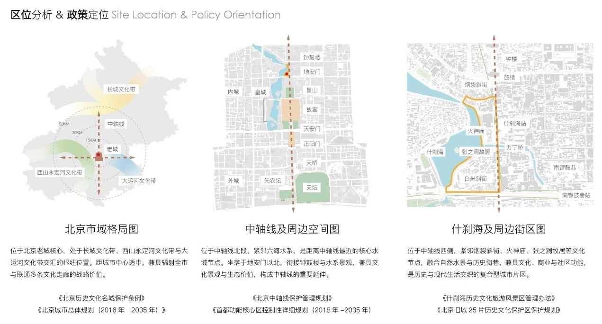
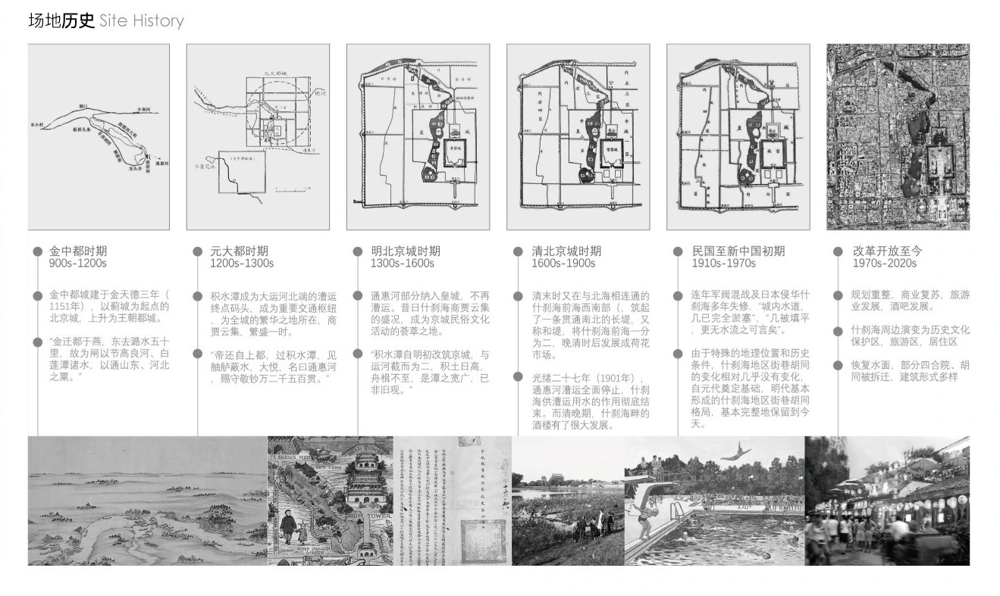

Whose Waterfront?
Heritage, inhabited thresholds and the uneven production of public life
Shichahai is not simply a lake encircled by public space. It is a historical water system, a lived-in network of hutongs and courtyards, a regulated conservation district, and a geography of visitor consumption.
These descriptions refer to the same place, but produce different accounts of who belongs there. The lakeside offers a recognisable image of Beijing; behind that image are residential entrances, inherited street orientations, unequal concentrations of shops, public agencies and commercial interests. The apparently simple question—whose waterfront?—therefore concerns the relationship between visibility, inhabitation and control, not merely proximity to water.
This essay brings eight studies into conversation. Some document actual renovation or user behaviour; others measure spatial relations or articulate conservation positions. Their differences are as revealing as their agreements. None is treated as proof of a later architectural proposal.

Image provenance / The six field photographs in this enquiry were supplied by Hao Chang; they are separate from the eight published literature sources [R1–R8]. Captions describe what is visible, not verified residency, individual intentions, or representative usage frequencies.

Research question
How have the changing water system, residential fabric, conservation policies, commercial geography and seasonal practices produced different experiences of public life in Shichahai?
Reading across scales and time
Methodological boundary. The eight studies use different geographic extents, observation periods and methods. Their combined interpretation is a documentary synthesis, not a new longitudinal survey of access, household change or public-space use across all Shichahai.
Rather than assemble all eight sources into a single fictional field survey, the enquiry reads them at the scale for which their evidence was produced. Lü Haihong, Song Xiaolong and Zhao Ye trace the morphology of Baimi Xiejie; Yang Junran evaluates historic conservation planning; Zhao Wenning, Wang Yifan and Fang Yuwei document renovation between 2002 and 2012. Zhang Yuyang and Yang Changming measure the relationship between street centrality and commerce, while Liu Yifei and colleagues record visual encounters on one lakeside route. Xu Miao and colleagues focus on the winter icefront. Sun Xiang examines the institutional history of the Dianmen Department Store project, and Wu Hui and Sun Xiaofeng provide an earlier normative account of the district's cultural landscape. [R1] [R2] [R3] [R4] [R5] [R6] [R7] [R8]
| Evidence | Study material | What it establishes / does not establish |
|---|---|---|
| Built fabric | Historic maps, courtyard typologies, heritage classification [R1] | Long-term relationships between shoreline, street direction and courtyard morphology; not present-day household permission to enter. |
| Implementation | 2002–2012 satellite comparisons, site visits; conservation evaluation [R2] [R3] | Who altered which kinds of sites, and what preservation entailed in the period studied; not an account of conditions in 2026. |
| Movement / commerce | Street network and 263 business POIs [R4] | Statistical association between street structure and shop concentration; not evidence that more shops benefit residents. |
| Perception / season | Wearable-camera images and winter field observations [R5] [R6] | Route-specific sightlines and seasonal occupations; not a representative, year-round resident survey. |
Reading note. Sources use different conservation boundaries, samples and dates. For example, Zhao et al. report a 302.57-hectare district under the 2002 plan, while Yang examines a later 336.47-hectare study area. Their figures are not interchangeable denominators. All statistics below retain the respective authors' original time periods and study areas. [R2, study area] [R3, p. 75]
The shoreline is part of the city's urban grain
Shichahai comprises the linked waters of Qianhai, Houhai and Xihai. Its historic identity is inseparable from the movement and changing extent of water. Lü, Song and Zhao's study of Baimi Xiejie uses historical maps to explain a particularly revealing exception to Beijing's more familiar north–south courtyard order: as the shoreline retreated, a street developed roughly parallel to the water, while adjacent residential courtyards followed one orientation and commercial courtyards nearer Dianmen's street frontage followed another. The meeting of those orientations produced an irregular but historically intelligible fabric. [R1, pp. 74–75]
The significance of Baimi Xiejie is thus not its eccentric shape alone. Its street alignment preserves a relationship among hydrological change, settlement and exchange. Its irregularity is a record of adaptation rather than a defect in need of correction. A plan that recognises only building footprints may fail to see why an oblique street, a courtyard edge and a former lakeshore belong to the same historical process.
Wu and Sun likewise describe the three lakes as a cultural landscape of residences, royal compounds, temples, gardens and traditional commercial streets. Their essay is a statement of conservation values, however, and its portrayal of an ideal quiet lakeside should be read as an argument made in 2011 rather than a neutral measurement of past street life. [R8, pp. 140–141]

A courtyard is not vacant public land
The hutong–courtyard system is often represented with a clear graphic hierarchy: lines for streets and solids for buildings. Inhabitation is less easily drawn. A courtyard may hold circulation, storage, household work and neighbours' negotiations within the same enclosure. The architectural boundary is therefore also a social boundary. Access to a hutong, access to a residence and a view into an entrance are three different relationships.
Lü, Song and Zhao show why the fabric cannot be conserved solely by preserving a street facade. Their examination of Baimi Xiejie identifies courtyard enclosure, building height, courtyard scale and the distribution of residential and commercial lots as interdependent components of historical morphology. The numerical controls proposed in that paper are planning recommendations by its authors, not measured social rights or rules adopted everywhere in Shichahai. The valuable research observation is the survival of an organised spatial grain behind apparently irregular edges. [R1, pp. 74–78]
Photographs from the supplied site record bring the physical scale into focus. Outdoor fitness equipment stands immediately beside a stone bridge; another view shows a stepped pedestrian edge separated from traffic by a large tree, railings, planting and changes in surface level. These observations show how different uses and physical thresholds coexist on the same frontage. A photograph alone cannot demonstrate who is permitted to use every path or whether the entire route is barrier-free.


Yang's evaluation expands the unit of heritage from single buildings to the relationship between fabric, infrastructure and continuing social life. Its framework distinguishes authenticity, integrity and social continuity. A courtyard can retain an historically legible shape while the social relations sustaining residential life undergo substantial change. Conversely, the absence of an untouched architectural object does not make the district devoid of inherited everyday practices. [R2, ch. 3 and ch. 4]


Protection is a process, not a boundary on a map
The conservation plan distinguishes different kinds of buildings and zones, but designation alone cannot account for the interventions undertaken within them. Zhao, Wang and Fang compared satellite images across five time points with field investigation and selected interviews to document renovation from February 2002 through March 2012. They identified more than 700 altered plots covering roughly 34.6 hectares, or 11.5% of the conservation area as defined in their research. Within the period, the proportion of land altered was 15.4% in construction-control areas and 8.9% in key protection areas. [R3, pp. 75–77]
The same study reports a striking difference between the conservation categories assigned to altered plots and the ways alterations actually occurred: about 67.4% of the affected area had been designated in categories for which demolition was not intended, while demolition and rebuilding or demolition without rebuilding accounted for 76.8% of the recorded altered area. These are separate distributions, not proof that 76.8% of protected buildings were illegally demolished. Plot-level cross-tabulation and legal circumstances would be required for that inference. [R3, p. 77]
Yang's 2014 assessment explains why implementation needs more than a compliance checklist. It compares planning intent with the effect of technical rules, institutions, property arrangements and social change, arguing that historical conservation must be assessed through what persists in cultural and residential life as well as what remains physically legible. Its social evidence includes a 2006 district survey, cited in the thesis, of 395 households: 75.2% supported tourism development, whereas only 26.8% were willing to become tourist-reception households. This difference cannot be generalised to today's residents, but demonstrates that support for a local economy and willingness to commercialise one's own home are different positions. [R2, pp. 69–75; 2006 survey quoted on p. 74]
Who actually changes the district?
Urban change is often described impersonally as “renewal”. Zhao and colleagues instead identify its agents: government departments, institutional property holders, developers and residents. Within the altered area they classified, government-led works accounted for approximately 44%, institutional property holders 22%, developers 16% and residents 12%; the balance was not definitively attributed. Public infrastructure and major events, property-market incentives and residential needs produced different patterns of change. These are shares of renovation area, not shares of residents or buildings owned. [R3, pp. 76–79]
The researchers associate government interventions with major infrastructure and event deadlines, including work around the 2008 Olympics and subsequent metro construction. Developer-led interventions, by contrast, are interpreted through land value and the commercial logic of site consolidation. Resident-led changes are smaller and dispersed, often associated with pressures to improve domestic conditions. A single conservation designation therefore operates within multiple, sometimes competing, decision-making systems. [R3, pp. 77–79]
Yang's assessment reaches a parallel conclusion through planning evaluation: the effectiveness of conservation depends on the alignment of statutory instruments, implementing agencies and the residents who continue to inhabit the district. The research does not establish that a unified actor speaks for “the neighbourhood”. [R2, ch. 5]
The tourist economy has a spatial logic
Commercial concentration is not distributed evenly across Shichahai's streets. Zhang and Yang's 2019 study collected 263 business points of interest and assessed three forms of street-network centrality using an urban network analysis tool. The analysis incorporated weights for 17 heritage and cultural destinations based on the authors' selected data. The correlations between the density of shops and two network measures were substantial: betweenness centrality R = 0.719 and closeness centrality R = 0.715, compared with straightness centrality R = 0.482. Their underlying POI and related heritage data describe the study period, including inputs obtained in 2017. [R4, pp. 112–117]
The authors' clustered high-centrality streets account for around 17% of studied street length but contain approximately 59% of identified shops. Important concentrations occur near Yinding Bridge, Prince Gong's Mansion and streets linking heritage destinations. This suggests that tourism's commercial geography is partly structured by routes and landmark accessibility, not solely by proximity to the water's edge. [R4, pp. 117–121]
The paper goes on to suggest additional commercial potential in Liuyin Street and Nanguanfang Hutong. That suggestion is the original authors' development recommendation, not a finding adopted by this enquiry. Analytically, the model reveals where commercial pressure might be concentrated; it does not answer whether introducing shops would protect residential affordability, sustain neighbourhood services or distribute benefits fairly. A street can be central to the visitor network and peripheral to local needs.
In the accompanying supplied images, a convoy of pedal-powered passenger tricycles and boats on the water make the visitor-oriented economy spatially visible. Both draw on the waterfront's scenic appeal, yet occupy different movement networks and operating conditions. These are observations of activities at one moment, not a movement count, a measure of local benefit or evidence about individual passengers' identity. Zhang and Yang's statistical model remains separately attributed.

What is seen is not the whole city
Visibility forms another, distinct geography of public life. Liu Yifei, Mou Tingting, Huang Ziwei and Ha Rigui used head-mounted cameras to record what 30 volunteers encountered along an 800-metre route between the north bank of Qianhai and the south bank of Houhai. From approximately 418 minutes of footage, their team extracted 25,089 frames and divided the route into 32 segments of 25 metres. They then identified perceived objects and georeferenced them as a visual-image map. [R5, pp. 121–123]
The photographs favoured the waterside: 69% of recorded views related to the right-hand waterfront prospect, compared with 31% towards the adjoining shops on the left. Because the research chose to focus principally on lakeward views, its map is especially informative about the visibility of landmarks, framed vistas and obstructions. It is much less equipped to account for the interior of courtyards, household routines or the conditions under which someone may occupy a space. [R5, pp. 123–124]
The authors acknowledge limitations including a small and relatively narrow sample, one survey direction and changing vegetation during data collection. Those limits are important rather than incidental: a landscape made publicly memorable through its scenic image may render other forms of occupation less visible. That contrast is an interpretation of the evidence presented here, not a conclusion measured by the camera experiment. [R5, p. 124]
When the lake becomes a temporary floor
A waterfront is generally imagined as the meeting of land and liquid water. Xu Miao, Zhu Wenyi and Wu Chen's study of Shichahai's winter “icefront” challenges that assumption. During periods when the surface is safely managed for ice activities, circulation and recreation extend from the shore onto a temporary frozen surface. The lake is no longer only a view or an edge; it becomes a differentiated field of play, observation and support activities. [R6, pp. 82–84]
The authors define the icefront as the ice itself, the shoreline and nearby land affected by winter use. Their field study classifies nine principal kinds and 27 subtypes of space, examining not only skating but also ticketing, equipment preparation, retail, movement, waiting and adjacent parking. In the configuration they documented, six managed rink zones were differentiated by activity and safety conditions. These are observations of the authors' winter study, not a declaration of today's rink operating arrangement. [R6, pp. 84–91]
The icefront makes the temporality of publicness unusually legible. In winter, a managed entrance and a ticketing process can give access to an area normally inaccessible on foot; at the same time, prices, operating schedules, ice conditions and safety zoning regulate that access. The public realm expands spatially while becoming subject to a different set of institutional and material conditions. What constitutes an accessible waterfront is therefore seasonal as well as geographic.
Dianmen Department Store and the meaning of continuity
Not every building of social significance in a historic district is a traditional courtyard. Sun Xiang's 2014 thesis examines the proposed renovation of Dianmen Department Store as part of a wider conservation initiative around Shichahai and Beijing's northern central axis. According to the thesis, the project team initially considered demolition and replacement, then changed course toward retaining the building's principal structure and adapting it. The text records the decision-making and intended renovation arrangement at the time; it should not be taken as an independently verified account of subsequent completion. [R7, ch. 3, esp. p. 24]
The case introduces a different kind of heritage value: the familiarity of a comparatively modern commercial landmark within an older neighbourhood. Sun describes a government coordinating body established in 2012 and a state-owned enterprise acting as an implementation vehicle, demonstrating how official planning goals, institutional authority and financial arrangements shaped the building's proposed future. [R7, pp. 3–4 and 28–31]
Wu and Sun's earlier essay advocates a broad relationship between physical protection and residential livelihood. It offers a useful counterpoint to institution-centred accounts, although its calls for a particular landscape atmosphere and transport pattern are normative proposals rather than verified local outcomes. Read together, these texts show that continuity is contested: it may refer to the appearance of the historic city, the memory of a building, the survival of ordinary commerce or the ability to remain at home. [R8, pp. 140–142]
Publicness is uneven because its conditions differ
The eight studies do not describe a single homogeneous “public waterfront.” They identify several overlapping forms of urban publicness. The historical shoreline records changes in the relation between land and water. Courtyard morphology mediates access from the street to domestic space. Conservation plans distribute permissions and restrictions through classifications and institutions. Street centrality concentrates economic opportunity, while scenic visibility produces an image of the city. Winter ice reassigns uses across space and time.
Four propositions emerge from this interpretive synthesis, rather than from a newly conducted survey. First, physical continuity does not guarantee social continuity: an intact street pattern may coexist with changed household composition or commercial purpose. Second, visibility is not access: a recognised lake view does not establish who may pass through, linger or enter the buildings behind it. Third, commercial vitality is spatially selective: network advantages can create intensive tourist corridors without describing benefits to every household. Fourth, publicness is temporal and institutional: winter activities, preservation controls and operating practices change the rights and routines associated with the same place.
In the photographic record, mobility is not one uninterrupted flow: informal sitting, exercise, wheelchair travel, pedicab movement and lakeside photography appear on nearby but differentiated surfaces. This extends the documentary reading towards the scale of bodies and ordinary activities, without implying a representative accessibility audit or a census of local residents.
The historic waterfront is not one public space but a negotiated relationship among water, households, visitors, inherited form and institutions.
As a result, asking “Whose waterfront?” does not require choosing between residents and visitors as mutually exclusive owners of the place. It requires observing how their claims differ, where they overlap and what remains absent from the evidence. The studies provide a historical and methodological foundation; they do not establish contemporary household-level displacement, affordability, access rules or seasonal usage without additional field research.
Evidence boundaries. The figures and observations above come from published research and historical documents, largely concerning the 2000s and 2010s. Their datasets belong to the named authors. This page does not claim original interviews with Shichahai residents, direct observation of the 2026 commercial landscape, a property-rights audit, or validation of any architectural design. Recommendations appearing in the original studies have been identified as such and are not adopted here as research findings.
Sources & references
The references below correspond to the eight research PDFs supplied for this enquiry. Cited page numbers refer to the original printed article or thesis pages unless otherwise indicated. A DOI is linked where verified; bibliographic entries without an open-access record are intentionally not linked to invented URLs. PDFs are not republished here.
- R1 / Morphology & conservation / 2007
Lü Haihong (吕海虹), Song Xiaolong (宋晓龙) & Zhao Ye (赵晔). “什刹海白米斜街地区保护规划” (Conservation Planning of the Baimi Xiejie Area in Shichahai).
北京规划建设 / Beijing Planning Review, 2007(1), pp. 74–78. Historical shoreline, courtyard orientations, typology and conservation-control recommendations. Bibliographic listing ↗
- R2 / Conservation evaluation / 2014
Yang Junran (杨君然). “什刹海历史文化街区保护规划实施评估路径研究” (The Study of the Implementation Evaluation of Shichahai Historical Conservation District Planning).
Master of Science thesis, School of Architecture, Tsinghua University, May 2014. Framework of authenticity, integrity and social continuity; planning implementation and stakeholder evidence. References in this essay to its historical household survey identify that survey as secondary evidence quoted in the thesis.
- R3 / Renovation implementation survey
Zhao Wenning (赵文宁), Wang Yifan (王逸凡) & Fang Yuwei (房宇巍). “什刹海地区改造调查：老城改造的实施主体与驱动因素” (Investigation of Renovation in Shichahai: Implementation Actors and Driving Factors).
北京规划建设 / Beijing Planning Review, pp. 75–79; publication year not visible in the supplied copy. Five-period satellite interpretation and selective field investigation covering 2002–2012; original source for altered-area totals and actor shares.
- R4 / Street-network commerce / 2019
Zhang Yuyang (张雨洋) & Yang Changming (杨昌鸣). “什刹海商业热点街巷区位特征及优化策略研究——基于道路中心性视角” (Location Characteristics and Optimization Strategy of Commercial Hot Streets in Shichahai).
旅游学刊 / Tourism Tribune, 34(7), pp. 110–123. Study of shop POIs, heritage weights and network centrality. DOI ↗
- R5 / Visual-perception field study / 2019
Liu Yifei (刘祎绯), Mou Tingting (牟婷婷), Huang Ziwei (黄子薇) & Ha Rigui (哈日桂). “北京什刹海金丝套滨水空间的视觉感知意象研究与眺望景观优化策略” (Research on Visually Perceived Image and Strategies for Vista View System Improvement of the Jinsitao Waterfront of Shichahai in Beijing).
景观设计学 / Landscape Architecture Frontiers, 7(2), pp. 121–131. 800-metre route, 30 participants, 25,089 frames; the study's original design recommendations are not treated as this essay's findings. DOI ↗
- R6 / Winter-use field study / 2018
Xu Miao (徐淼), Zhu Wenyi (朱文一) & Wu Chen (吴晨). “北京什刹海‘滨冰空间’初探” (A Study on “Icefront” of Beijing Shichahai Area).
城市设计 / Urban Design, 2018(3), pp. 82–93. Fieldwork on winter ice activity, shore facilities, spatial types and operating conditions.
- R7 / Institutional case study / 2014
Sun Xiang (孙翔). “地安门百货商场更新改造研究” (Renovation and Refurbishment Case: Dianmen Department Store).
Master of Engineering thesis, Department of Construction Management, Tsinghua University, November 2014. Documents the proposed project, changes to its planned implementation, and management structure.
- R8 / Conservation discourse / 2011
Wu Hui (吴卉) & Sun Xiaofeng (孙晓峰). “城市更新中的广义设计倾向——以北京什刹海历史文化保护区为例” (Broad Design Tendencies in Urban Renewal: The Shichahai Conservation District).
文艺争鸣 / Literature and Art Studies Debate, 2011(2), pp. 140–142. A normative position on historical landscape, social livelihood and public space; cited as conservation discourse, not as an empirical access survey.